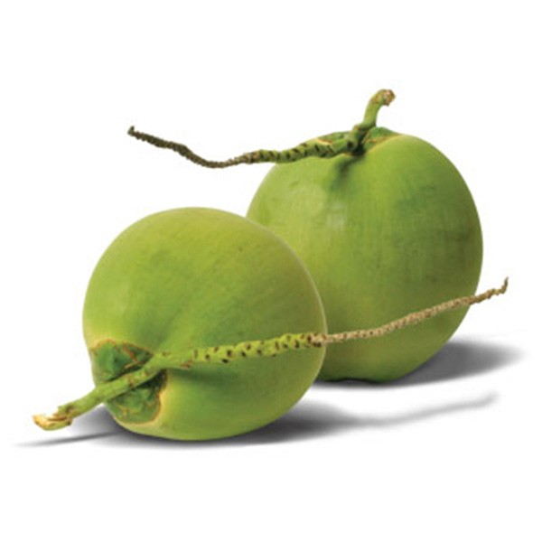

नारियल पानी व खीरे का रस मिलाकर रोजाना लगाने से। दाग धब्बे मिटते हैं, त्वचा कांतिमय लगने लगती है। नारियल का दूध बालों के बढऩे में महत्वूर्ण भूमिका अदा करता है। यह बालों को बेहतरीन पोषण प्रदान करता है।नारियल की गिरी खाने से रंग निखरने लगता है।